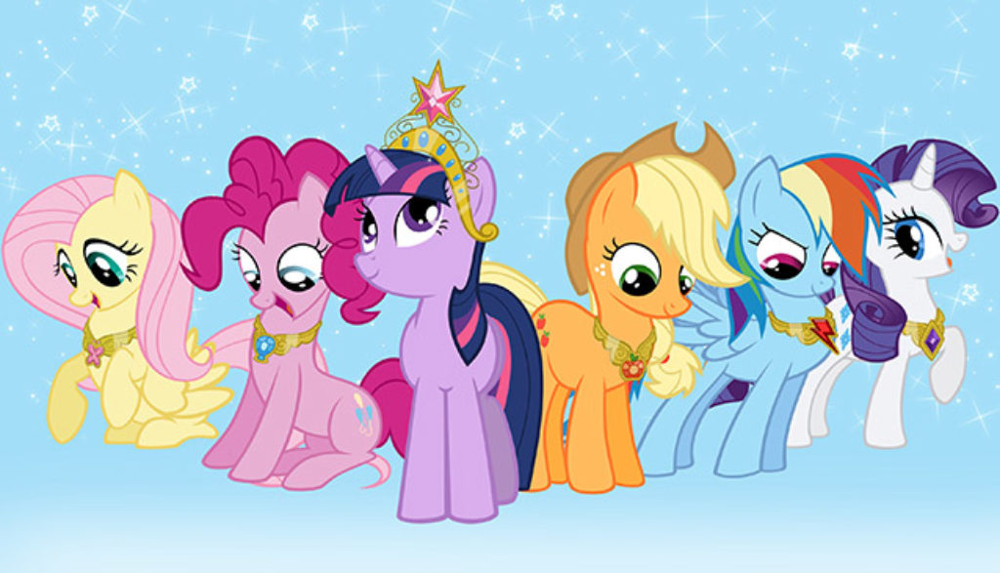

My Little Pony
Personajes
Dentro de la generacion 4 tenemos los 7 personahes principales:
- Twilight Sparkle
- Spike
- Pinkie Pie
- Fluttershy
- Applejack
- Rainbow Dash
- Rarity

Tambien tenemos otros personajes secundarios que forman parte del avance de la historia y el desarrollo de los personajes:
- Mascotas:
- Owlowiscious (Buho de Twilight)
- Gummy (Cocodrilo beb de Pinkie)
- Angel (Conejo de Fluttershy)
- Winona (Perra de Applejack)
- Tank (Tortuga de Rainbow)
- Opal (Gato de Rarity)
- Familiares:
- Twilight Sparkle:
- Night Light y Twilight Velvet (Padres)
- Shining Armor y Spike(Hermanos)
- Princesa Cadence (Cuñada)
- Flurry Heart (Sobrina)
- Pinkie Pie:
- Igneous Rock Pie y Cloudy Quartz (Padres)
- Maud Pie, Limestone Pie y Marble Pie (Hermanas)
- Chesse Sandwich (Esposo)
- Little Chesse Pie (Hijo)
- Fluttershy:
- Mr. y Mrs. Shy (Padres)
- Zephyr Breeze (hermano)
- Applejack:
- Bright Mac y Pear Butter (Padres)
- Big McIntosh y Apple Bloom (Hermanos)
- Granny Smith (Abuela)
- Grand Pear (Abuelo)
- Rainbow Dash:
- Bow Hotsue y Windy Whistles (Padres)
- Scootaloo (Hermana de corazon)
- Rarity:
- Hondo Flanks y Cookie Crumbles (Padres)
- Sweetie Belle (Hermana)
- Amigos de las 6:
- Princesa Celestia
- Princesa Luna
- Zecora
- Trixie
- Bulp Biceps
- Mr y Mrs Cake
- Villanos:
- Nightmare Moon
- Discord
- Reina Chrysalis
- Rey Sombra
- Lord Tirek
- Starlight Glimmer
- Pony de las Sombras
- Strom King
- Tempest Shadow
- Cozy Glow
- Sunset Shimmer
- The Dazzilings
- Midnight Sparkle